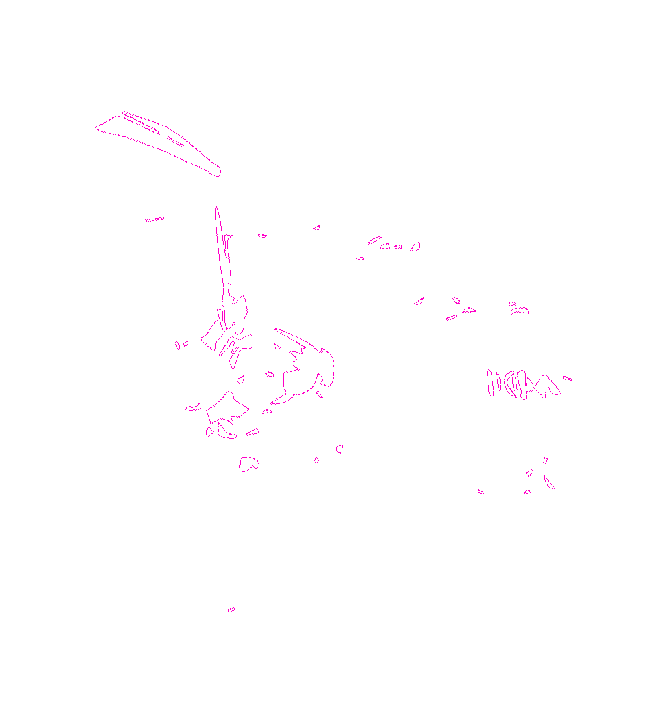
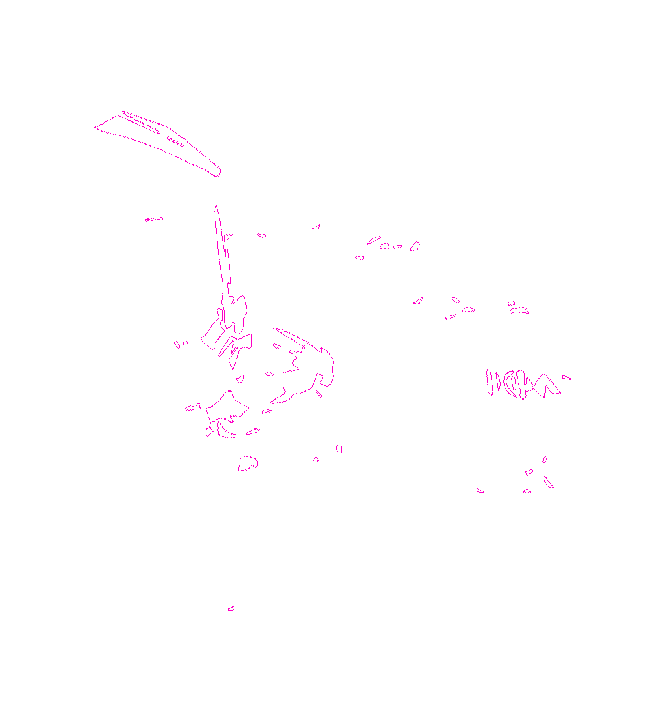
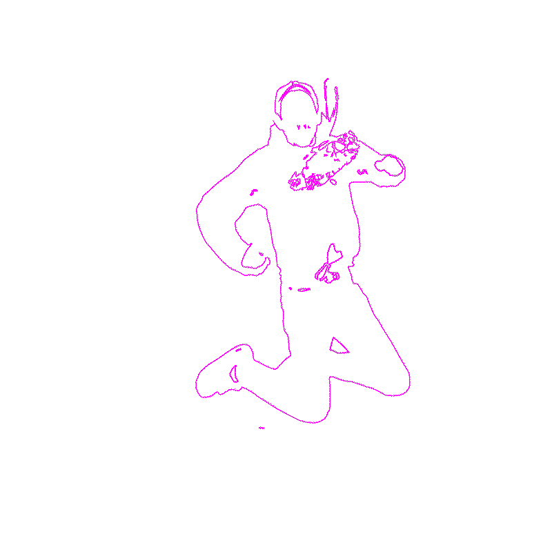
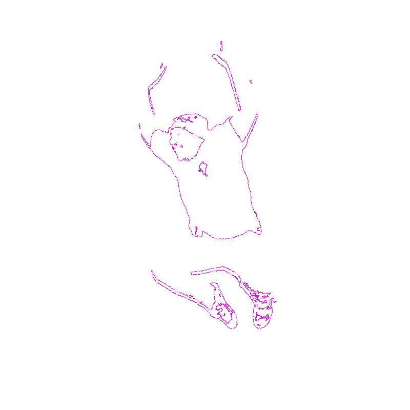
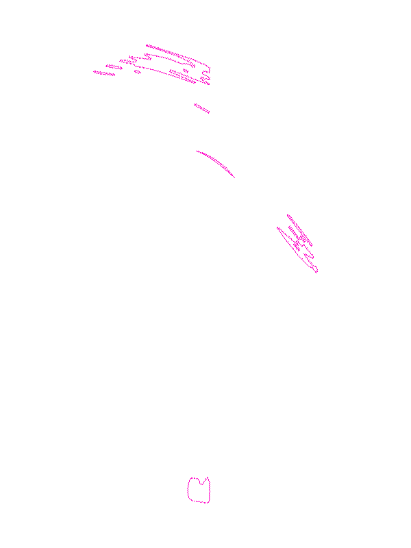
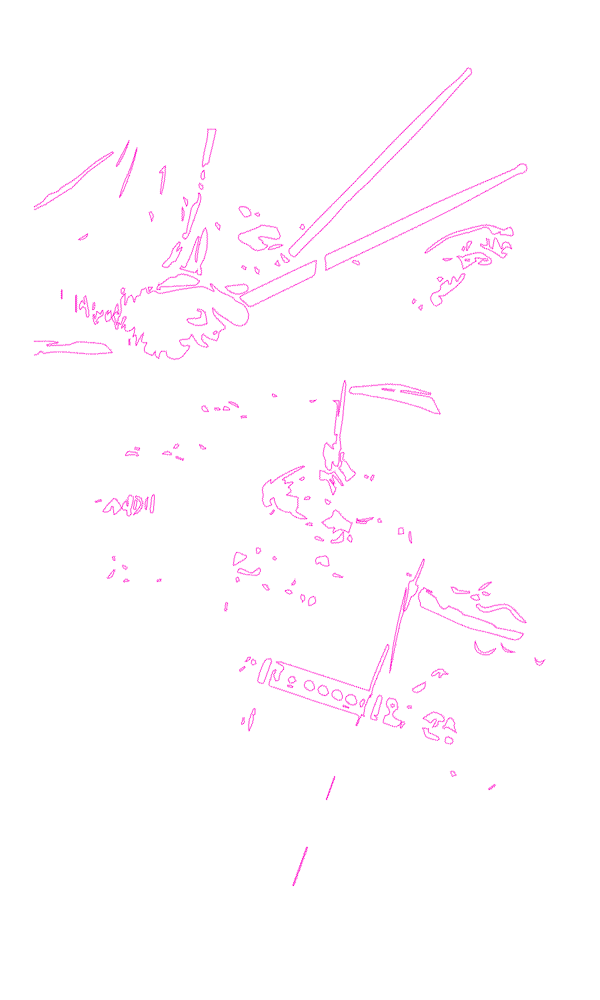
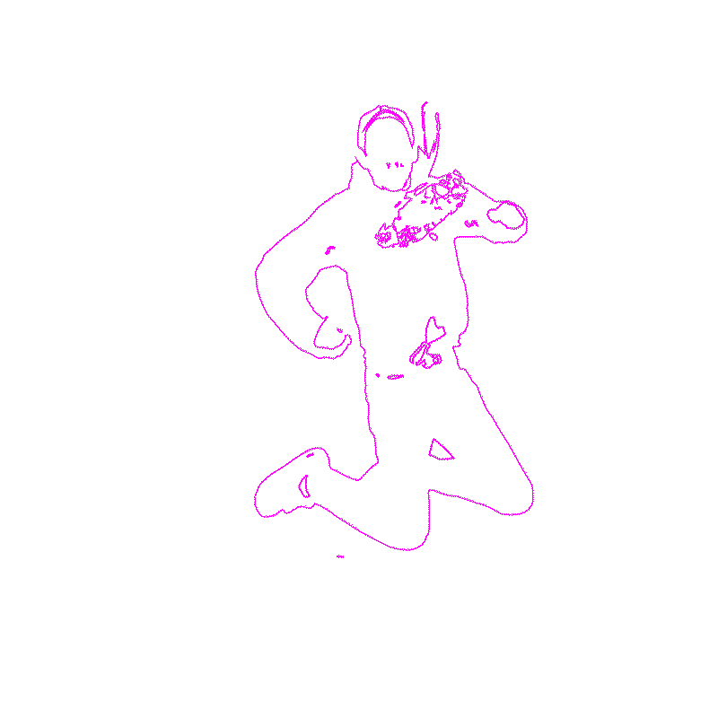
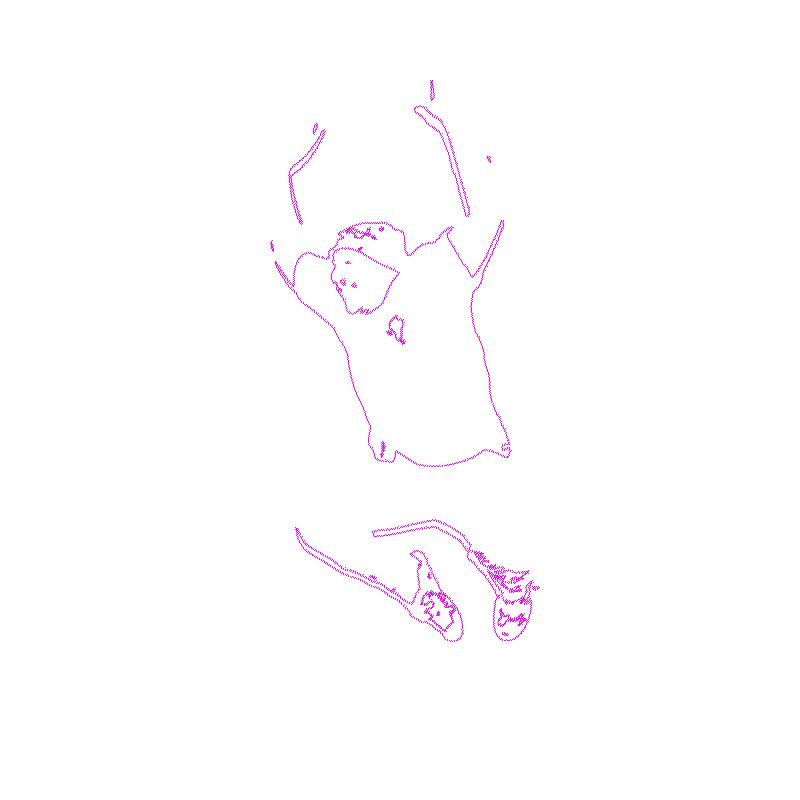
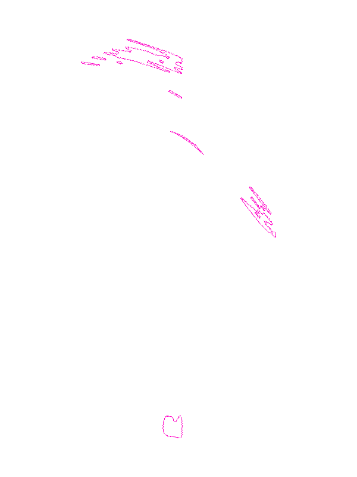
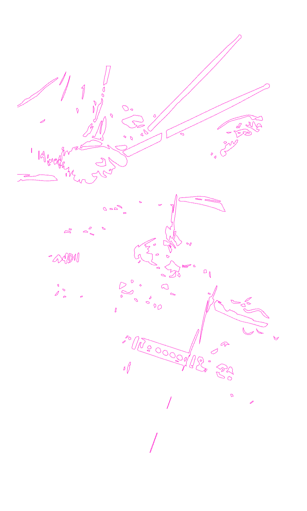

Morning Dew
A two-piece
blankblankblankb
SCREAMO BAND
blankblankblankblankblankblankblank
on their first full(ish) US tour.
Who are you and what do you do?
6: I’m Six, like the number. I do some vocals, I play guitar, book most of this stuff, and do the no—fun stuff on social media. But uh, Steve’s the powerhouse.
S: I play drums and scream at the same time. Six does all the talking to people and stuff like that. I just play drums, heh.
Who is your audience? How would you describe them?
6: I’ve been talking to a lot of people on this tour. We’ve played with a couple of bands that are hardcore, but our crowd is definitely less on the macho end of things. It feels like the community is on a similar wavelength; we don’t make political music, but it’s often people who feel the same way about ideological things. This music is typically a lot sadder, so it brings in a lot of people who are really just going through it—anyone who can relate to any of the subject matter, anyone who takes the time to read the lyrics and see the loss and grief.
I feel like this scene is really important to foster a good community of people who want to work together and get better. It’s really hard to put into words… people are just going through it and want to work towards a better something together. Because we all know how hard it is.
Where did this journey begin?
6: We started making music together first year of high school, but it wasn’t exactly Morning Dew. We went through a few different bands and a few different lineups, but at our core, it’s just the two—piece thing. We have a really magical chemistry and connection. We can just bounce off each other for hours and hours. Initially, we were not doing the screamo thing; we just didn’t want to sing.
Singing is lllllllllllllllllllll vulnerable llllllllllllllllllllllllland scary,
and it’s a lot easier to tell when you mess up. So we were just practicing in Steve’s bedroom, just yelling into the void, making D’Beat (a style of hardcore) punk—really fast, kind of chanty, just two lines of lyrics that we repeat.
What inspired you and how have you been propelled ever since?
6: As our tastes evolved, the music kind of evolved. What if we try to do something mathy or twinkly and then screamed over that? We eventually got shown what DIY (Do It Yourself) is and how to book shows. Once we got into that realm of things, people would write in sections on our flyers: “Sounds like DeSantis Landscape,” “Sounds like William Bonney,” “Sounds like screamo skramz.” And then, we literally had to do research and be like, ‘What is screamo scramz?’ Oh, Joshua Fit for Battle! Oh, Jeromes Dream! So with our last album, not more purposefully, we made what sounds more like a screamo record because our tastes have been influenced over the years compared to the first couple of things we made in high school.
We always would just call ourselves an emo punk band because the lyrics were emo, sad, and we were screaming them, but the music felt very punk to us. It was really, really fast, really aggressive beats, but sad lyrics.
Has there been any individuals who have supported you along the way?
6: Oh, a thousand percent. There have been so many people. I can only speak for myself, so Steve can get in here. But, Sammy Heck from Maryland, they are the ones who showed us DIY right out of high school. They helped us book our first house show, assisted us in getting our footing into things, and figuring out how to do the DIY thing.
There’ve been a handful of bands we played with where it’s just been like, wow, we are really, really doing the thing. When we first played with Siglo in 2017 back at our house that we used to run, that was pretty intense. They’re a really amazing band, and now they’re signed to Epitaph. It’s just a really wonderful thing to be able to see people get up and out of the basement like Origami Angel. We used to play with them all the time and book all of their first shows. And, again, they’re out of the basement. They’re so big, and it’s wonderful.
Getting to meet our heroes like Jack from William Bonney and all these different projects, we’ve got to meet all these wonderful people. It gets really, really, really mind—blowing to get to play shows and go to new places, and people are like, ‘I’ve been listening to you for so long and I’ve been dying to see you!’ It’s wild… it’s so wild to be perceived. It’s just really, really, really fascinating.
We’ve met some really, really wonderful people, like the drummer Goose from Indisposed. We just clicked like that, we’ve just been besties, and we stay in touch all the time. It feels really, really safe to be in a community where everyone is in it for all the right reasons. There’s no one who’s out here trying to get famous. It’s just people who care about the community, care about the art that they’re making a lot, and the people who enjoy it. It’s
really nice to llllllllllllllllllllllll be a part of something that feels so wholesome,llllllllllll
and I don’t say humble, but definitely people are out here just being wonderful.
How have you seen your words or lessons impact others? Are there stories that you could share?
6: There would be a few people who come up to us at shows. This one person, Kenny from Michigan, who we first met at this festival last year said, “Oh, I’ve been listening to you for so long, and I wrote bass parts for the album.” That means the world [to us] and is really sick. I don’t want to sound like a weirdo, but to see other queer and trans people really enjoying what we’re doing and finding solace in some of the things that we’ve been talking about in the songs really just hits home super—duper hard. It’s really, really nice to know that music can do anything for anybody. It’s a big cathartic thing for us, the writing process, the whole screaming thing...
llllllllllll It’s extremely llllllllllllllllllllllll cathartic llllllll and really nice to lllllllllllllll be able to llllllllllllllllllllllllhelp people through and with llllllllllllllllthe same things.
One of our friends, Olivia, came on a tour with us in 2019 with Commander Salamander. We lost one of our friends, and after a little while, they reached out because of our song “Subclavian Notch.” For being a sad band, that song ends on a high note, “I’ll be moving on to better things.” They reached out about that one particular line, about how much that really kind of helped ground them through a tough time, and that’s really, really beautiful.
Or Eva from The Civil War in France, based out of Philly. She’s also from Maryland, and she would travel three hours to come to the houses that we would host. I remember when she first came to our show to see us and hearing her say, “Oh, you sound like such and such screamo band.” That made my day; that made my whole universe.
Someone talking about my favorite band and us in the same sentence, that’s the coolest thing ever. Her project, The Civil War in France, is so big, so successful; she has totally eclipsed us. She has a hit five or six now on YouTube. It’s so heartwarming to see that anyone can do ‘the thing.’
A big thing we try to push is DIT (Do It Together) instead of DIY, which to me, always sounded really alone. It’s hard to do it myself. It’s much easier having Steve, having our friends, the people who help us book things, and our friends who screenprinted our shirts from Leonardo Decapitated. To say that we’re doing it alone is reductionist, and it’s really important to give everyone that credit. We are here thanks to literally all of you, and we wouldn’t be here if it wasn’t for all of y’all. It’s really a magical thing, and everyone needs to be given their credit and respect. It’s just a beautiful thing.
Has there been any turning points in your career?
6: When we broke up for a year, that sucked, that sucked big time. From 2018 to 2019, we weren’t making music together, and that was like the darkest period of my life. [Steve laughs a bit] I was really stuck. We weren’t talking a whole lot, and I really felt like I had been divorced, like all of my dreams had disappeared. Being in a band is a really, really, really close relationship. You not only share a lot with each other, you rely on each other for a lot. Granted, I don’t see Morning Dew playing arenas, but I certainly love being out here in Texas for our first time ever. I wouldn’t be here if it wasn’t for Steve. [Steve laughs] He’s an amazing drummer. He’s wicked. After we got back together, it’s been better than ever.
We started to work on the new album, and then COVID happened, which I’m sure set back everyone who makes art and music. Working on the album when I moved to Pittsburgh totally set things off a little bit more because we’re five hours away, and I didn’t have all the recording equipment. Not all the songs were even written, but we made it work. We would be texting each other rhymes and little things like, ‘hey, what about this? What about that?’ and it’s really funny to me. I’ll be sitting on the bus somewhere in Pittsburgh, texting the saddest things ever to Steve, bouncing line for line. When it works, it works; it doesn’t ever feel like it has to be forced; it never feels like work. Which is great. It’s just fun.
Sometimes it feels like such an oxymoron to be so happy at shows. Me being so excited and then you go into the saddest song you’ve ever written, talking about the saddest trauma you’ve ever experienced. It’s a really, really magical and beautiful thing to get to share this catharsis with him [looks at Steve] and the crowd of strangers, wherever we are, but it’s definitely hard out here.
What are some misconceptions about your work?
6: I think most of it was just our name. A lot of people initially thought we were affiliated with the Grateful Dead to some degree, like we were a cover band or something, because they have a song called “Morning Dew.” That would be our biggest thing at the start. People would be leaving comments on our Facebook saying, “Y’all are great for a punk cover band.” No, we’re a two—piece band, and we make our own original music.
Some people would come up to us after the set and be like, “Oh, I’m sorry. People weren’t moshing with y’all.” We’re not pressed about that. We don’t go into anything with expectations. We don’t base the show off of the crowd so much. If we have fun, that’s a good night. That’s all we’re here to do—have fun. We’re not here trying to strike it rich. It’s really just about doing the thing and having a good time. Some people on this tour have been like, “Oh, when was the last time you played in a house?” Two nights ago, we weren’t famous like that. We’re not big. We aren’t headliners. We’re just here to have fun. I don’t know. It’s just a good time. We’re a two—piece; it’s pretty straightforward. Otherwise, if people don’t get it, that’s fine too.
What advice would you give to someone who is looking to discover their authentic voice?
6: With DIT, everyone has the power to do their thing. It can be really daunting to see people performing, especially if you’re on some big crazy stage. You could do it. Anyone can and should do it. I’ve always been a big proponent of everyone can sing. Everyone and their mom always say, “Oh I sing, but only in the car, only in the shower alone.” It can be embarrassing because it’s really vulnerable and scary. But everyone can and should do it. Everyone can be appreciated by someone. Beauty is in the eye of the beholder.
Everyone is art,lllllllllllllllllllll is beautiful to someone, lllllllllllllllllllllllland lllllllllldeserves lllllllllllrecognition.
There are so many bands out there. There’s so much art, music, and literature. There’s just so much I’ll never get around to, and it’s so overwhelming because it’s all great. I want to give everything a chance. I really try to look for new things.
Call your friends. Tell them you love them.
Call your friends. Tell them you love them.
 

 






